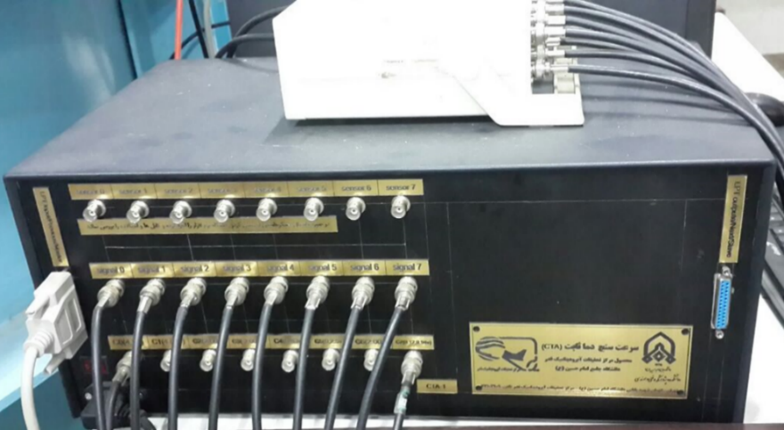
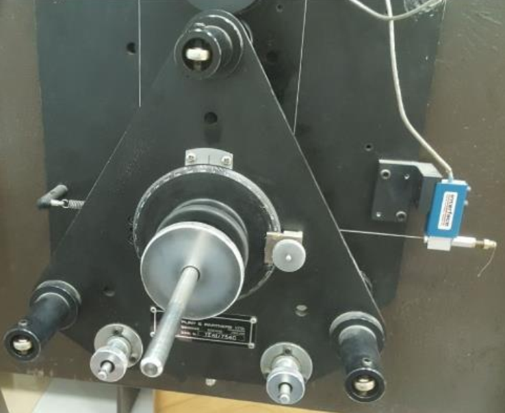
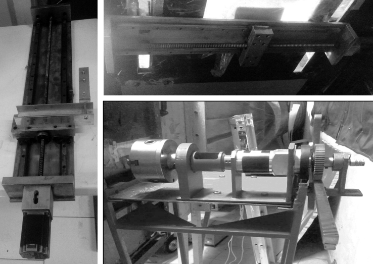
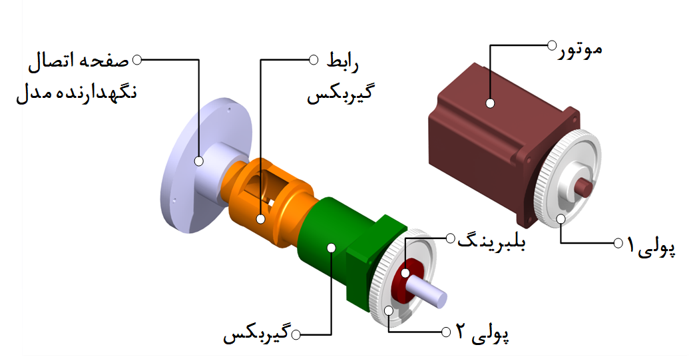
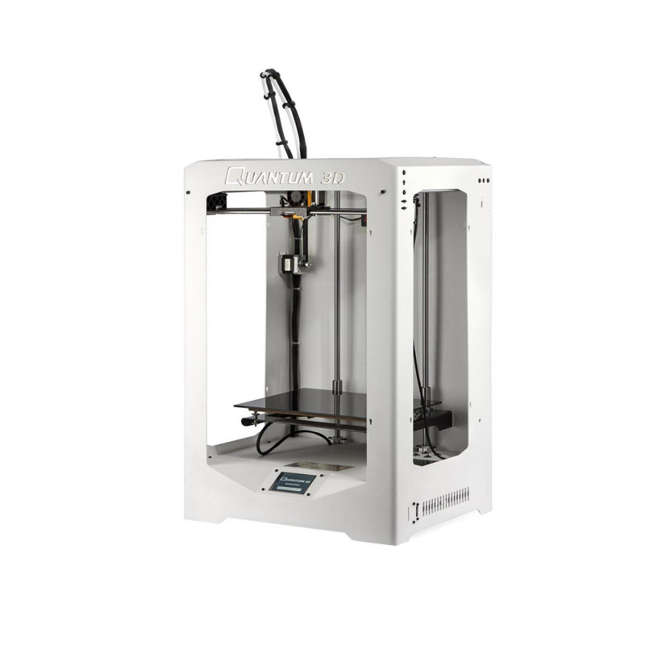

DANA Subsonic Wind Tunnel & Metrology Suite
Established in August 2012 at the Department of Aerospace Engineering, Amirkabir University of Technology. A research-grade aerodynamic testing infrastructure designed for high Reynolds number subsonic flow investigations, low turbulence level, and precision diagnostics.

Tunnel Architectural Specifications
The DANA wind tunnel is an open-circuit, suction-type subsonic aerodynamic facility. Air enters through a bell-mouth intake and settling chamber equipped with high-porosity honeycombs and anti-turbulence damping screens. A 9:1 aerodynamic contraction nozzle delivers a highly uniform flow with exceptional flow angularity stability and turbulence intensity under 0.1%.
Sensory Instrumentation Systems

Constant Temperature Hotwire Anemometer
High-bandwidth CTA velocity anemometer measuring flow velocities from 0 to 100 m/s with ±0.01 m/s accuracy. Captures velocity fluctuations up to 2 kHz without analog signal degradation.
• 2 kHz turbulence frequency
• Temperature compensation

80-Channel DPS Pressure Acquisition
Synchronous multi-channel differential pressure scanning box equipped with 5, 12.5, 25, and 69 mbar transducers. Measurement error < 0.1% full scale.
• 5, 12.5, 25, 69 mbar spans
• <0.1% FS accuracy

3 & 6-Component Aerodynamic Balances
External 3-component balance for lift, drag (0–100 N), and pitching moment (0–2.5 N.m). Dynamic 6-component internal balance for forces up to 300 N in X, Y, Z.
• 6-DOF Dynamic: 0–300 N
• Pitching, Rolling, Yawing

Automated 3-Axis Cartesian Traversal
Computer-controlled 3D traversing mechanism allowing automated probe scanning across the test section with 1 mm spatial accuracy in X, Y, and Z axes.
• 1 mm spatial precision
• Automated boundary survey

Precision Model Alpha Mechanism
Rotational pitch actuator enabling remote, continuous angle-of-attack adjustment from -20° to +35° with 0.1° positioning accuracy.
• Dynamic oscillation mode
• Heavy model support

FDM Aerodynamic Model Prototyping
Large-format FDM additive manufacturing system fabricating aerodynamic models up to 45 × 30 × 42 cm with 100 µm layer resolution in PLA and ABS.
• 100 µm precision
• Integrated pressure taps